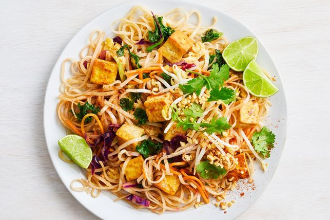

Pad-Thai

Description
Pad Thai is a quintessential and beloved Thai street food dish that has gained international acclaim for its
harmonious blend of flavors and textures. This iconic stir-fried noodle dish typically features flat rice
noodles stir-fried with a medley of ingredients, including tofu or shrimp, bean sprouts, crushed peanuts,
scrambled eggs, and a flavorful combination of tamarind paste, fish sauce, and chili. The result is a
tantalizing combination of sweet, sour, salty, and spicy notes that dance on the palate. Garnished with fresh
cilantro and lime wedges, Pad Thai embodies the essence of Thai cuisine, offering a perfect balance of
contrasting elements that make it a delightful and satisfying culinary experience.
ingredients
- Rice Noodles
- Tamarind Paste
- Fish Sauce
- Bean Sprouts
- Crushed Peanuts
- Tofu or Shrimp (protein choice)
- Scrambled Eggs
- Garlic (minced)
- Shallots (sliced)
- Vegetable Oil
- Red Chili Flakes (optional, for spiciness)
- Lime Wedges
- Fresh Cilantro (for garnish)
Steps
- Soak rice noodles in warm water until they are pliable but still firm. Drain and set aside.
- Mix tamarind paste with fish sauce, adjusting the ratio to achieve a balance of sweet and tangy flavors. Set
aside.
- If using tofu, sauté until golden brown. If using shrimp, cook until they turn pink. Set aside.
- In a wok or large pan, heat vegetable oil. Add minced garlic and sliced shallots, sauté until fragrant.
- Push the aromatics to one side of the wok and pour beaten eggs into the empty space. Scramble the eggs until
cooked.
- Add the soaked rice noodles to the wok, stirring to combine with the eggs and aromatics.
- Pour the prepared tamarind sauce over the noodles. Mix well to ensure even coating.
- Return the cooked protein (tofu or shrimp) to the wok. Add bean sprouts and toss everything together.
- Taste and adjust the seasoning if needed, adding more fish sauce or tamarind paste for your preferred
balance of flavors.
- Plate the Pad Thai and garnish with crushed peanuts, red chili flakes (if desired), lime wedges, and fresh
cilantro.